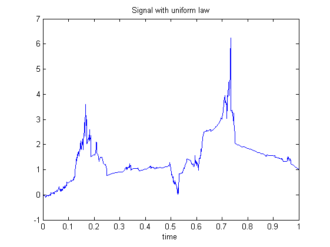
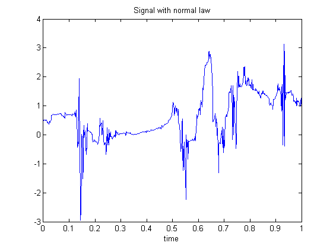

| FRACLAB Functions |
|
Generates a radom Fractal Interpolation Function based on Stochastic Iterated Function System
IFS = ifstfif(N,MI,VC)
IFS = ifstfif(...,'Law')
IFS = ifstfif(...,'Propertyname',Propertyvalue)
IFS = ifstfif(N,MI,VC) Generates the fractal interpolation function, IFS, using a sample size, N, a 2x3 matrix of interpolation points, MI, and a 1x2 vector of contraction ceofficients VC. The parameter N is a positive, power of 2, integer and the parameters MI and VC are reals.
IFS = ifstfif(...,'Law') Generates the fractal interpolation function, IFS, using a specific type of law for the contraction coefficients. The supported Laws can be choosen from the list below :
| Specifier | Law Type |
|---|---|
| 'uniform' | Uniform random law (default) |
| 'normal' | Normal random law |
H = ifstfif(...,'Propertyname',Propertyvalue) Generates the fractal interpolation function, IFS, applying the specified property settings. The property setting can be choosen from the list below :
| Property | Purpose | |
|---|---|---|
| 'ratio' |
The IFS is computed using a specific ratio, S that rules the variance decrease across scales.
|
N = 1024; t = linspace(0,1,N);
Mxx = [0 0;0.5 1;1 1]; Myy = [0.5;0.9];
x = ifstfif(N,Mxx,Myy);
figure; plot(t,x);
title('Signal with uniform law'); xlabel('time');

N = 1024; t = linspace(0,1,N);
Mxx = [0.3 0.5;0.5 1;1.3 1]; Myy = [0.3;1.1];
x = ifstfif(N,Mxx,Myy,'normal');
figure; plot(t,x);
title('Signal with normal law'); xlabel('time');

[1] J. Levy Vehel and K. Daoudi "Generalized IFS for Signal Processing", IEEE DSP Workshop, Loen, Norway, September 1-4, 1996.
| |
ifsgfif | lacunarity | |